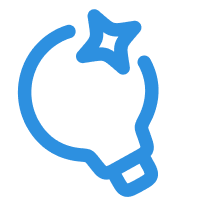
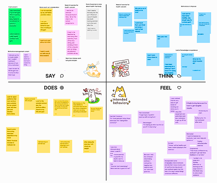
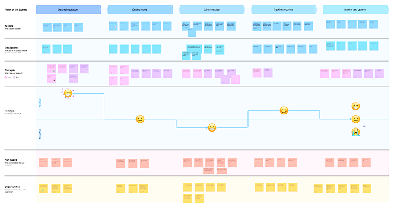
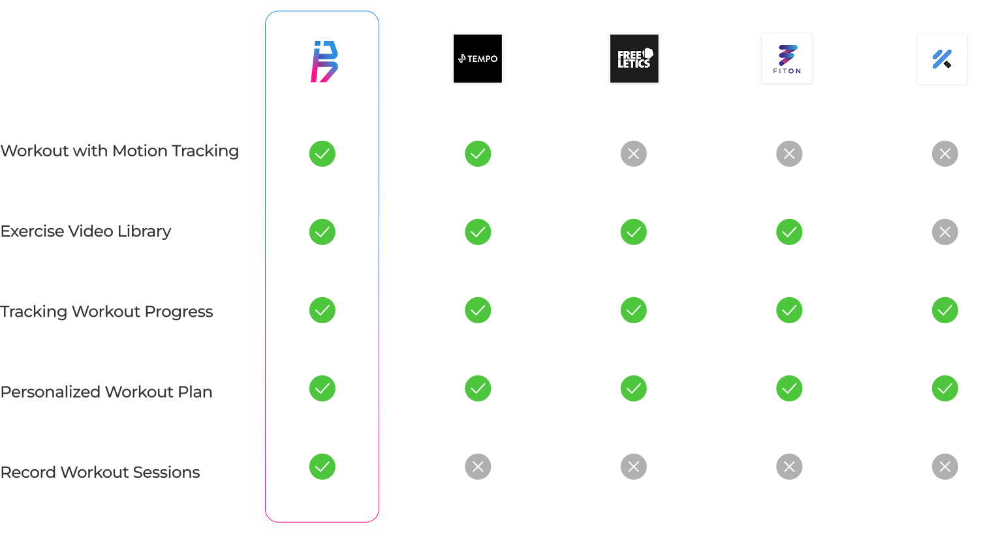
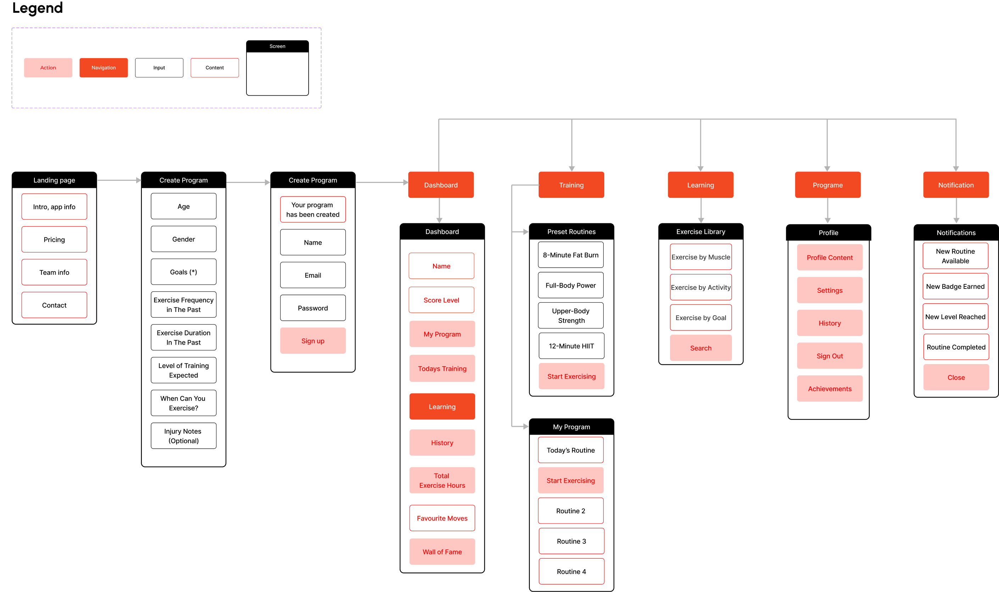
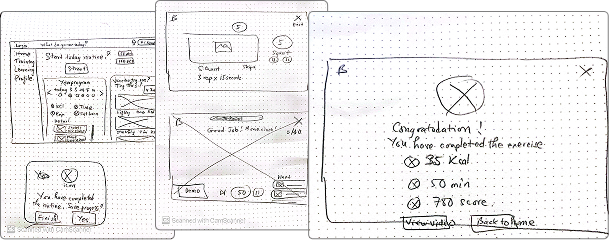
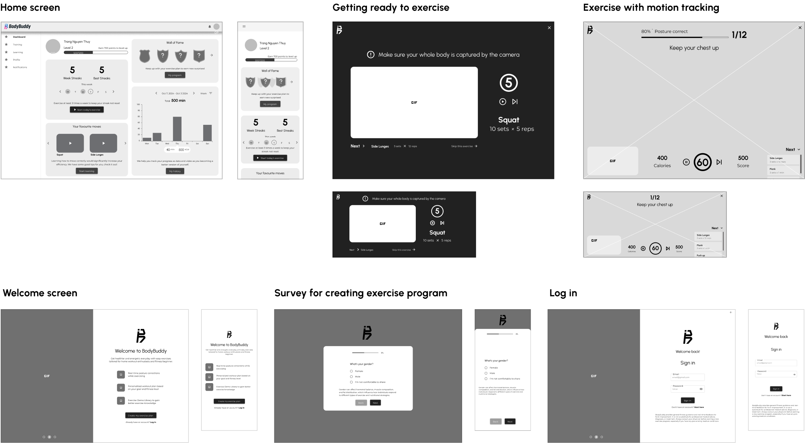
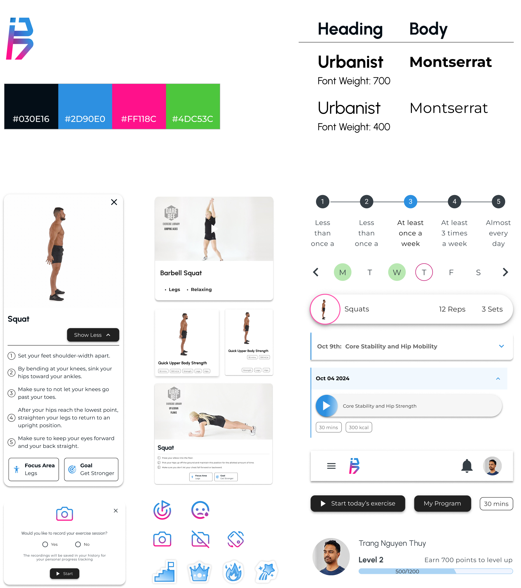
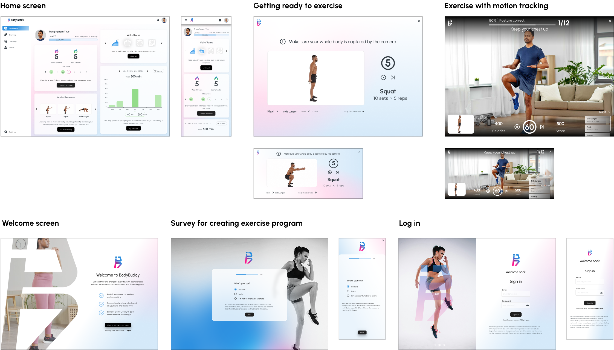
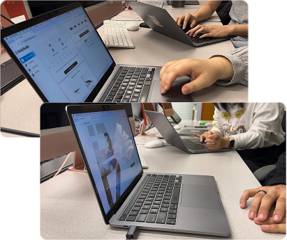

Web app
Group project
15 mins reading
All you need to start your fitness journey
BodyBuddy is a web platform that allows people to work out in their own homes or on the go, at their own pace. It focuses on safe and effective workout experience by real-time form correction and personalized exercise plan.
Try app demo
Team members
5 designers
4 developers
My role
UI/UX Designer
Co-Project Manager
Timeline
Sept 3rd - Dec 1st 2024
Tools


Idea
We want to create an MVP app that utilize AI motion tracking to assist people with exercising without having deep knowledge about fitness, going to the gym, or having personal trainer.

App Features
Motion-Guided Workouts
Real-time feedback on exercise form through motion tracking helps users correct improper movements, prevent injury, and ensure effective workouts.
Personalized Exercise Plan
AI assistance analyzes user input, including exercise experience, level, goal, and other preferences, then generates a tailored exercise plan for the user.
Exercise Demo Library
Provide a collection of basic exercise videos & detailed instruction that help you learn and practice each movement effectively.
Fitness Growth Tracking
A progress dashboard with visualized data, including workout history, achievements, and progress towards a goal, helps maintain user motivation.
App Demo
Design workshop - put ourselves in the potential target user's shoes
To kick off this project, we organized a design workshop with both developers and designers after each member doing research on their one by conducting interviews and doing secondary research. My role in this was planning and facilitating the workshop. With a clear objective and agenda for the workshop, we had a fun workshop that led to the discovery of useful insights.

We did empathy mapping

And came up with a user journey from attempting to start doing exercise and trying to keep up with it
What problem can we possibly solve?
With empathy mapping and user journey, I was able to summarize these user paints points. Together with the team, we arranged it based on criticalness and the opportunities we could get out it for solving the problems with our app.
| Getting inspiration & getting ready to exercise | Doing exercise | Tracking progress & growth |
|---|---|---|
| Overwhelmed by too much information about fitness and not knowing where to start | I worry about getting injury | Inability to see tangible results, which makes maintaining inspiration more difficult |
| Busy with personal life and having difficulty finding a flexible exercise program that fits their schedule | Not sure if they are doing the exercise correctly | The exercise program on the video or app is not suitable for their individual fitness goals |
| Lack of Motivation and struggling to take the first step, needs inspiration | No interaction, making the exercise time boring | The same video or app program doesn’t progressively overload or adapt the routine based on the user’s progress, leaving them stagnant |
| Cost consideration: Going to the gym and having personal trainer is costly if they can’t commit | Fitness beginner lack fitness equipment | It is difficult to control because multiple factors, including diet as well as exercise, affect the results. |
| Inaccurate tracking results |
Whose problem are we trying to solve?
With empathy mapping and user journey, I was able to summarize these user paints points. Together with the team, we arranged it based on criticalness and the opportunities we could get out it for solving the problems with our app.
How do we differentiate ourselves from existing apps?
With the pain points and target users in mind, we came up with the features and compared with potential competitors. Bodybuddy offers an adaptive, personalized training program that tracks user progress. It provides a guided workout by motion tracking, providing real-time cues and corrections. With the focus on bodyweight exercises, it’s designed for fitness beginners who want to start exercising at home.
Here is my simplified competitive research. Though in the chart, I compared all applications based on a set of the same features, it’s necessary to mentioned that the features are not completely the same for all the app. Each app also has differences in its target audiences.

User flow
We prioritize key features and construct our user flow. To avoid users being overwhelmed, our target was to keep the user flow simple and allow users to focus on the key values they need from the app, which are starting to exercise and seeing their tracking result. Below is how the high-level user flow looks.
With the template I crated, our team built this user flow to lay out the blueprint for how each of the features interact. It was critical to understand the interaction between the training feature, the learning feature, and the exercise screens, as well as how user history would be tracked and recorded in the dashboard and profile.

Paper wireframe
I was mainly responsible for designing:
- Log in & Sign up flow
- Home page (dashboard)
- Exercise screen
Paper wireframe is always the first thing to go, as I can write down and experiment with any layout in minutes before having a good option to put in Figma.

Digital wireframe
These are the main screens I created for Bodybuddy. I was excited for getting to explore and design the pages where users would get to interact with the most. I always keep user-centric mindset and ask myself:
- What would users get from this screen?
- What is the most important thing they care about?
- How can users achieve their goal in this screen?
- What happens if users take any possible action in the screen?
As I created the wireframe, I also conducted short usability tests with 1-2 users to keep improving through each iteration.

Heuristic evaluation & Cognitive Walkthrough
In order to create a better user experience, we conducted heuristic evaluation and cognitive walkthrough at the early stage of the design process, which is after having our initial wireframes. This will allow the designers to test their design in advanced, therefore would save time for effectively improve the wireframe before moving to styling when creating the mock-up. I conducted the heuristic evaluation based on Jakob Nielsen's 10 general principles for interaction design. Additionally, I invited other members to test my wireframe by conducting cognitive walkthrough. Here are my key findings, which were reflected in the above wireframes:
| Exercise screen issues | Action |
|---|---|
| It takes user a few seconds to distinguish the difference between “sets” and “reps”. | Perhaps a tooltip explaining this would help users who doesn’t know anything about workouts. |
| There is No option to “Pause” for watching demo or during the exercise. | Add option to pause & continue during demo & exercise session. |
| Users may want to cancel or pause their workout, but ‘x’ button isn’t clearly visible, which make users of hesitant to click on it. | Increase the size of Exit icon or consider user different type of icon for better visibility. |
| Dashboard issues | |
| Unable to search the achievement button. | Add achievement button that is easy to find. |
| Too much information in the Dashboard. | Put the individual metrics in the left side while the individual goals in the right side. |
| There should be a hierarchy, goal is more important than the Performance graph. | Simplify data on dashboard |
| With the two cards side by side, the data is bit confusing. | Goals should be seen below the profile Not the performance. |
Branding & UI Kit
Here comes the “fun” part! Each team member came up with different ideas for logos, color palette, mood board, and typography. Eventually, we finalized the best options that suit our vision for the app: Reassuring, encouraging, and healthy. Color palette with high saturated blue, pink, and green is upliftings. We chose sans-serif fonts that are highly readable and have a modern, active vibe. From that, we constructed our UI kit as below.

Mockups
This is when I brought the vision of our app to life! I made 2 versions: dark mode and light mode for the home screen as an experiment. That’s when I learned that light mode is a better choice to ensure screen visibility during daytime, indoor, and outdoor use. I also incorporated a touch of energetic vibrance to the design through soft gradients, stimulating a welcoming exercise atmosphere for our users. These are some of the main screen mock-ups that I created:

Usability testing
Bodybuddy is designed for users to exercise at home and adjust their postures, thus they would more often use a desktop/TV screen to use our app. Considering the time constraint, we only tested our app on a desktop. With a background in Marketing and experience in conduting interviews and research in general, I helped our team construct detail usability testing plan and script, facilitate part of the test, and finally generate the report with key findings and next actions.

Prototype for sign-up & log-in flow
Prototype for training flow
Key finding from usability test
Bodybuddy is designed for users to exercise at home and adjust their postures, thus they would more often use a desktop/TV screen to use our app. Considering the time constraint, we only tested our app on a desktop. These are the key findings from the usability test. However, within the project timeline, we would not be able to revise our app based on these findings.
| Dashboard | Action |
|---|---|
| Non-engaging achievements, the "Wall of Fame" appeared unclear and cluttered | Enhance Badge Descriptions and Display, reorganize Badge Layout |
| Non-engaging achievements | Add option to pause & continue during demo & exercise session. |
| Sign up | |
| Unusual user sign up flow: survey before sign up | Start the onboarding process with account creation, followed by plan customization |
| The Call-to-action button is confusing | Revise CTA button |
| Long details explanation - too much text | Simplify or condense the explanations for onboarding questions |
| Exercise flow | |
| The countdown timer before the workout began was confusing, with no clear indication of what was happening and what to do. | Add audio instructions and a countdown for users to prepare and know when to start exercising. |
| The user did not expect to set up a space for exercising in front of the camera. | Add guidelines/tips for new users on how to set up a space for exercising with the app. |
| With the two cards side by side, the data is bit confusing. | Simplify data on dashboard |
More info about how BodyBuddy came to life? Here is the proposal I crafted in InDesign!
What I learned
#1 Consistency is key to being efficient
One of the main problems that costs our team a lot of time is meeting and adjusting the design to “try” to be consistent when collaborating. We had a tough time trying to have everyone use the same component, color, typography for similar elements in different features for the wireframe, mock-ups. This made me realize how important constructing and aligning UI kit was even for wireframe.
#2 More user research
At the beginning of the project, I admitted that we did not have proper and thorough research with enough users, which could lead to many conflicts when discussing about users and making design decision.
#3 Keep testing early & throughout the project
Testing early from the initial wireframe allow me more time to improve the design and also saves much more effort compared to only testing at the mock-up stage.
Next step
Thanks for reading!
Check out my other creations

DriveBuddy App (design)

Favr App (design)

A Zine (design)

My portfolio (design & code)

BodyBuddy website (design)

My branding (design)

Drivebuddy website (design)

Favr logo & web (design)